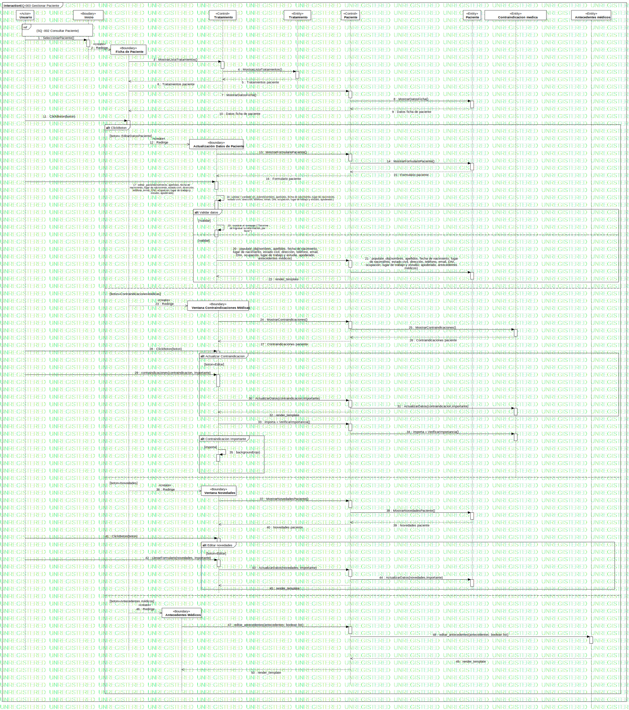

SQ-003 Gestionar Paciente
UMLInteraction
Dentware
::
Modelo de diseño
::
Modelo de interacción
::
SQ-003 Gestionar Paciente
Description
none
Diagrams

SQ-003 Gestionar Paciente
Fragments
Validar datos
sd 001 Consultar Paciente
ClickBoton
Actualizar Contraindicacion
Editar novedades
Agregar pago
Contraindicacion Importante
Participants
«Actor»Usuario
«Boudary»Inicio
«Boundary»Actualización Datos de Paciente
«Control»Paciente
«Boundary»Ficha de Paciente
«Entity»Paciente
«Boundary»Ventana Contraindicaciones Médicas
«Boundary»Ventana Novedades
«Boundary»Ventana Pagos
«Entity»Paciente contraindicacion medica
«Control»Tratamiento
«Entity»Tratamiento
Messages
SeleccionarPaciente() (Usuario→Inicio)
Redirige (Inicio→Ficha de Paciente)
MostrarListaTratamientos() (Ficha de Paciente→Tratamiento)
MostrarListaTratamientos() (Tratamiento→Tratamiento)
Tratamientos paciente (Tratamiento→Tratamiento)
Tratamientos paciente (Tratamiento→Ficha de Paciente)
MostrarDatosFicha() (Ficha de Paciente→Paciente)
MostrarDatosFicha() (Paciente→Paciente)
Datos ficha de paciente (Paciente→Paciente)
Datos ficha de paciente (Paciente→Ficha de Paciente)
ClickBoton (Usuario→Ficha de Paciente)
Redirige (Ficha de Paciente→Actualización Datos de Paciente)
MostrarFormularioPaciente() (Actualización Datos de Paciente→Paciente)
MostrarFormularioPaciente() (Paciente→Paciente)
Formulario paciente (Paciente→Paciente)
Formulario paciente (Paciente→Actualización Datos de Paciente)
LlenaFormulario (Usuario→Actualización Datos de Paciente)
ValidarDatos (Actualización Datos de Paciente→Actualización Datos de Paciente)
Mostrar (Actualización Datos de Paciente→Actualización Datos de Paciente)
ActualizarDatos (Actualización Datos de Paciente→Paciente)
ActualizarDatos (Paciente→Paciente)
Redirige (Ficha de Paciente→Ventana Contraindicaciones Médicas)
MostrarContraindicaciones() (Ventana Contraindicaciones Médicas→Paciente)
MostrarContraindicaciones() (Paciente→Paciente contraindicacion medica)
Contraindicaciones paciente (Paciente contraindicacion medica→Paciente)
Contraindicaciones paciente (Paciente→Ventana Contraindicaciones Médicas)
ClickBoton (Usuario→Ventana Contraindicaciones Médicas)
LlenarFormulario(contraindicacion, importante) (Usuario→Ventana Contraindicaciones Médicas)
ActualizarDatos(contraindicacion,importante) (Ventana Contraindicaciones Médicas→Paciente)
ActualizarDatos (Paciente→Paciente contraindicacion medica)
importa = VerificarImportancia() (Ventana Contraindicaciones Médicas→Paciente)
importa = VerificarImportancia() (Paciente→Paciente contraindicacion medica)
background (Ventana Contraindicaciones Médicas→Ventana Contraindicaciones Médicas)
Redirige (Ficha de Paciente→Ventana Novedades)
MostrarNovedadesPaciente() (Ventana Novedades→Paciente)
MostrarNovedadesPaciente() (Paciente→Paciente)
Novedades paciente (Paciente→Paciente)
Novedades paciente (Paciente→Ventana Novedades)
ClickBoton (Usuario→Ventana Novedades)
LlenarFormulario(novedades) (Usuario→Ventana Novedades)
ActualizarDatos(novedades) (Ventana Novedades→Paciente)
ActualizarDatos (Paciente→Paciente)
Redirige (Ficha de Paciente→Ventana Pagos)
MostrarPagosPaciente() (Ventana Pagos→Paciente)
MostrarPagosPaciente() (Paciente→Paciente)
Pagos paciente (Paciente→Paciente)
Pagos paciente (Paciente→Ventana Pagos)
ClickBoton (Usuario→Ventana Pagos)
LlenarFormulario (Usuario→Ventana Pagos)
ActualizaDatos (monto,fecha,metodoPago) (Ventana Pagos→Paciente)
ActualizaDatos (Paciente→Paciente)
Properties
Name
Value
name
SQ-003 Gestionar Paciente
stereotype
null
visibility
public
isReentrant
true
Owned Elements
SQ-003 Gestionar Paciente